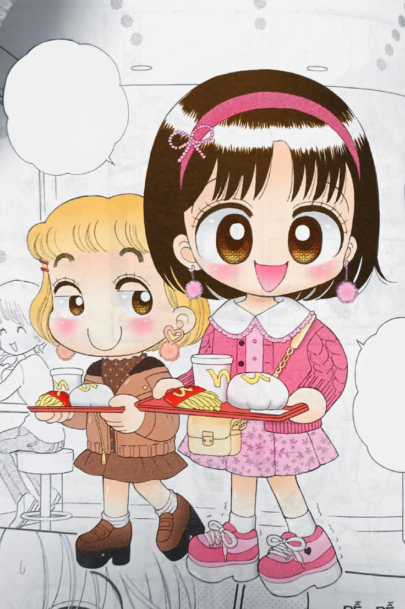

Mengenal Hai, Miiko! Lebih Dekat
Hai, Miiko! (judul asli di Jepang: Kocchi Muite! Miiko) karya mangaka Eriko Ono bukan sekadar bacaan ringan pengisi waktu luang. Sejak pertama kali diserialisasikan di majalah shoujo Ciao terbitan Shogakukan, manga ini telah menjelma menjadi salah satu ikon komik anak dan remaja yang paling dicintai lintas generasi, baik di Jepang maupun di Indonesia.
Daya Tarik Cerita: Kehidupan Sehari-hari yang Hangat
Kekuatan utama dari Hai, Miiko! terletak pada kemampuannya mengangkat hal-hal sederhana dari keseharian anak SD kelas awal hingga beranjak dewasa. Tokoh utamanya, Miiko Yamada, digambarkan sebagai anak perempuan yang ceria, penuh semangat, terkadang ceroboh, namun memiliki kepedulian yang sangat besar terhadap orang-orang di sekitarnya.
Tidak ada konflik epik yang menegangkan atau intrik yang rumit di dalam cerita ini. Alurnya berfokus pada dinamika keluarga—seperti hubungan Miiko dengan mamanya yang tegas namun penyayang, serta adiknya, Mamoru (Muru) yang menggemaskan—serta dinamika persahabatan di sekolah bersama Mari, Kokoa, dan Yuko. Setiap bab menyajikan potret emosi yang jujur: mulai dari kegembiraan kecil mendapat nilai bagus, rasa panik karena PR tertinggal, kesedihan akibat salah paham dengan sahabat, hingga benih-benih perasaan suka yang manis.
Pertumbuhan Karakter yang Konsisten

Salah satu alasan mengapa para pembaca setia terus mengikuti komik ini selama bertahun-tahun adalah bagaimana Eriko Ono merawat perkembangan karakternya. Miiko dan teman-teman sekelasnya tidak terjebak dalam usia yang statis selamanya. Kita bisa melihat bagaimana mereka tumbuh secara perlahan, menghadapi tantangan transisi dari anak-anak menuju masa pra-remaja, memahami arti tanggung jawab, dan belajar menghargai perbedaan pendapat.
Hubungan antartokoh juga berkembang secara natural. Dinamika antara Miiko dan Tappei—yang sering diwarnai adu argumen konyol namun sarat perhatian tersembunyi—menjadi salah satu sorotan favorit yang selalu dinantikan penggemar di setiap volumenya.
Adaptasi dan Perjalanan Panjang
Kepopuleran komik ini turut melahirkan adaptasi anime sebanyak 42 episode yang diproduksi oleh Toei Animation dan tayang di TV Asahi pada tahun 1998 hingga 1999. Hingga kini, dengan terbitnya volume ke-39 di Jepang pada Agustus 2025, perjalanan kisah Miiko terus memperlihatkan relevansinya di tengah era modern.
Catatan Penutup
Melalui situs All About Hai, Miiko! ini, catatan volume demi volume dan analisis karakter dirangkum sebagai bentuk apresiasi mendalam terhadap sebuah karya yang telah menemani perjalanan literasi dan masa kecil banyak pembaca. Semoga ulasan di sini bisa membawamu kembali mengenang kehangatan dunia Miiko, atau menginspirasi pembaca baru untuk ikut merintis petualangan serunya!
« Kembali ke Home